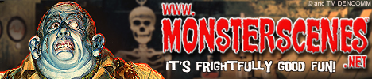

Our Friends
Eric Pigors' Toxic Toons!
Want to see what is going on with those crazy Toxictoons? Click on the banner above and load up on shirts, stickers, books, toys, pins, prints and more!
Sideshow Monkey

Want to see more Sideshow Monkey Characters? Click on the banner above and get the lastest news on David Hartman and his demented characters. And make sure to visit the store and pick some cool Sideshow Monkey merchandise.
Maskworld.Com
Need to pickup Trick or Treat Studios masks in Europe, well look no further! Maskworld.com is Trick or Treat Studios exclusive Distributor for Germany, Austria, Switzerland and
Denmark.
Not only does Maskworld.com carry Trick or Treat Studios Masks, Maskworld.com is the place to go for masks, costumes, make-up and every Halloween accessory you could ever want!
So European Trick or Treat Studios Customers, save money on shipping and checkout the amazing selection of costumes at Maskworld.com!
HalloweenCostumes.Com

HalloweenCostumes.com is a leading online retailer of costumes and accessories for both adults and children. The company offers a large variety of costumes, including superhero, Star Wars, KISS, traditional, scary, sexy, Harry Potter, plus-size, and more. Many of the costumes available are officially licensed or exclusive to the company, so make sure to check them out!
HalloweenCostumes.com takes pride in its friendly customer service, fast shipping methods, and excellent merchandise. And, they carry masks from Trick or Treat Studios!
Fright Rags
SICK OF THE SAME OLD HORROR SHIRTS?
So were we...and that's why we love FRIGHT-RAGS! Since 2003, they've been bringing horror fans from around the world the best in horror t-shirts and apparel. From cult classics to even the most obscure films, Fright Rags has the horror shirts you want...better yet, the horror shirts you NEED.
Monster Scenes

A controversial past. An unprecedented resurrection. Monster Scenes have returned! From classic model kits to exciting new products, exclusive features, stories, and more! Venture into the MonsterScenes.net dungeon...if you dare!
Nightowl Productions
Just beyond the graveyard's edge lies a small workshop cloaked by the cover of darkness. On any given night, well passed the witching hour, you will see a faint amber glow and a shadowy figure scurrying about through the windows. It is Justin Mabry, the Nightowl ghoul, and creator of Nightowl Productions. Justin has been making masks for well over 15 years and is responsible for creating many masterpieces that grace the shelves of mask collectors all over the world.
From zombies to freaks, monsters to madmen, Justin creates each one of them with the precision and skill of a fine craftsman, from beginning to end. So checkout Nightowl Productions and pickup one of his amazing masks!
Lubatti Designs Unlimited
In 1997, Erich opened Lubatti Designs Unlimited, one of the premier horror art studios on the net for Halloween Masks.
Erich spent two years as a prosthetic make-up artist at Knott's Berry Farmfor the amazing Halloween Haunt and continues to produce Custom Latex Halloween Face Masks directly for actors at the Haunt each and every year.
So checkout Lubatti Designs Unlimited for some amazing masks!
Danger-Zone Collectibles
Need to find Trick or Treat Studios masks in the U.K? Look no further! Our buddies at Danger-Zone Collectibles has got you covered. They carry our full line of full head and face masks, in addition to great toys, costumes, t-shirts and much more!
BuyCostumes.Com
Need a costume for all occasions? BuyCostumes.com is the #1 online Halloween costume and accessory retailer on earth. They sell costumes for kids and adults (dogs, too), for year-round fun, not just Halloween. They also sell party supplies and coordinated decorations for every type of party imaginable. If you can imagine it, BuyCostumes.com probably has it and they carry Trick or Treat Studios!
Ultimate Haunt
The Ultimate Tribute to The Haunt
Want the lastest and greatest news on the king of Haunts, Knott's Berry Farm's Halloween Haunt, Ultimate Haunt is the site to visit.
A Band of Orcs
Want Some Crazy Orc Metal?
Visit our buddies, A Band of Orcs, and rock out! And be on the look out this Summer for execlusive latex Orc masks, based on Gogog Bloodthroat, Oog Skullbasher, Hulg Elf R.I.P.per and Gronk produced by Trick or Treat Studios!
Rotting Flesh Radio

Rotting Flesh Radio is weekly podcast dedicated to the Haunted Attraction Industry hosted by Jonathan Johnson, also known as The Mortician. The weekly show covers current industry news within the Haunted Attractions Industry focusing on events, props, how-to, conventions, tradeshows and haunted attractions.
Rotting Flesh Radio also invites industry veterans and horror icons on the show to give their insights.
Trick or Treat Studios was happy to be a guest on Rotting Flesh Radio. Click hereto listen to the show featuring, Chris Zephro, Justin Mabry and Eric Pigors!
Ghoulish Gallery

Haunted Mansion-style changing portraits that transform from seemingly normal to delightfully ghoulish right before your very eyes.
Haunted House Association
HHA is a professional association for Halloween and Haunted Attraction owners and operators.
They represent all professional Halloween events specifically Haunted Attractions to the national media, government agencies, amusement associations, trade magazines, haunt vendors and to any other interested parties who want to learn more about this spooky and creative industry.
If you own a Halloween or Haunted Attraction, this is the association to join.
Trick or Treat Studios is a prefered vendor of the HHA and we offer discounts to all HHA members.
Monster Creature Feature
Want to see a great show all about Monster Movies and Monster Happenings? Than Monster Creature Feature is for you. Hosted by Ormon Grimsby, a.k.a. The Undertaker, this is the show to watch on Friday nights. And they've even featured our own Eric Pigors and his great ToxicToons!
The Scare Factory
Need a quick and easy way to find Haunted Houses, Ghost Towns, Haunted Hotels, and Ghost Stories, The Scare Factory is the place. They also specialize in Professional Halloween Sound FX and other great Halloween related products.
And they also have a super cool logo drawn by our own Eric Pigors!
Terror From Beyond The Daves

Want to get all the latest on everything horror? Look no further than Terror From Beyond The Daves.
Our friends, David Albaugh and Dave Fuentes have put together one of the best Blog sites on the internet, covering everything from movies to collectables. So make sure to click on the link above and check it out!
VHS Wasteland

Remember those old VHS cover from your childhood? You know those awesome B-Horror movie covers.
Well if you ever wanted to see them again, VHS Wasteland is the place. VHS Wasteland is your home for high resolution scans of rare, strange, and forgotten VHS covers. Each of these bizarre gems is scanned at 200 dpi. Simply click on the thumbnail of any VHS cover to download the full high res format.
Pumpkinrot Blog

There are a lot of horror blogs out on the web, but Pumpkinrot Blog is definetly on the top of my list. John is really on top of everything horror.
So make sure to get on over to Pumpkinrot.com and see what's going on!
House of Mysterious Secrets
Want a one stop location for all your Horror needs? House of Mysterious Secrets is the place to go. They have everything from Horror Collectibles, Horror Merchandise, Shirts, DVDs, Toys, Comics, Posters and Trick or Treat Studios Masks! So head on over to House of Mysterious Secrets and tell Kevin that we said hi!
FearShop.com
FearShop.com - The Store Where Horror Meets Metal
Want the best in Licensed Tee Shirts, fabric posters and more from metal bands and horror movies? Well look no further than our friends at FearShop.com! They Rock!
ShellHawk's Creations

ShellHawk's Creations is a wonderful Halloween Blog that covers a full range of Halloween related topics. So if you want to checkout a great Blog, ShellHawk’s Creations is for you!
Tim Gore Extreme Art
Tim Gore has worked in the Film Special effects and toy design industry for over 25 years and now he is ready to share his visions and nightmares with the public.
Tim's amazing art is hand finished, painted and detailed individually. Make sure to checkout Extreme Art and get yourself one of his creepy creations.
Upon A Midnight Dreary

The adorably insane Dahlia Jane created this blog to showcase the macabre things that inspire her. Follow her Los Angeles adventures at Upon A Midnight Dreary. Oh ya, and she is a big fan of Trick or Treat Studios!
Twisted Toy Box
Twisted Toybox designs and create custom latex masks, props and costumes for Halloween haunters, monster collectors, and haunted attractions worldwide. All of thier products are hand-made in the USA by our own artist Chris Russell.
Killer Pumpkin
KillerPumpkins is changing the face of Halloween!
See the spooky brilliance of Halloween as seen thru the eyes of artist John Pelico. His vibrant use of color and style has created a signature look now known throughout the industry. Check out John's work, it's really cool!
Costume SuperCenter
Need a costume for Halloween this year? Make sure to visit our friends at Costume SupperCenter. They have everything you need to put together a complete costume for all you costuming needs.
Netherworld Haunted House
 Located in Atlanta, NETHERWORLD Haunted House is a walk-through dark attraction filled with terrifying live actors, amazing special effects, and incredible monsters.
Winner of Haunted Attractions Magazine's Top 25 Haunts, Netherworld Haunted House is a must see!
Located in Atlanta, NETHERWORLD Haunted House is a walk-through dark attraction filled with terrifying live actors, amazing special effects, and incredible monsters.
Winner of Haunted Attractions Magazine's Top 25 Haunts, Netherworld Haunted House is a must see!
Plus, our own Eric Pigors designs thier posters and t-shirts and they feature Trick or Treat Studios masks!